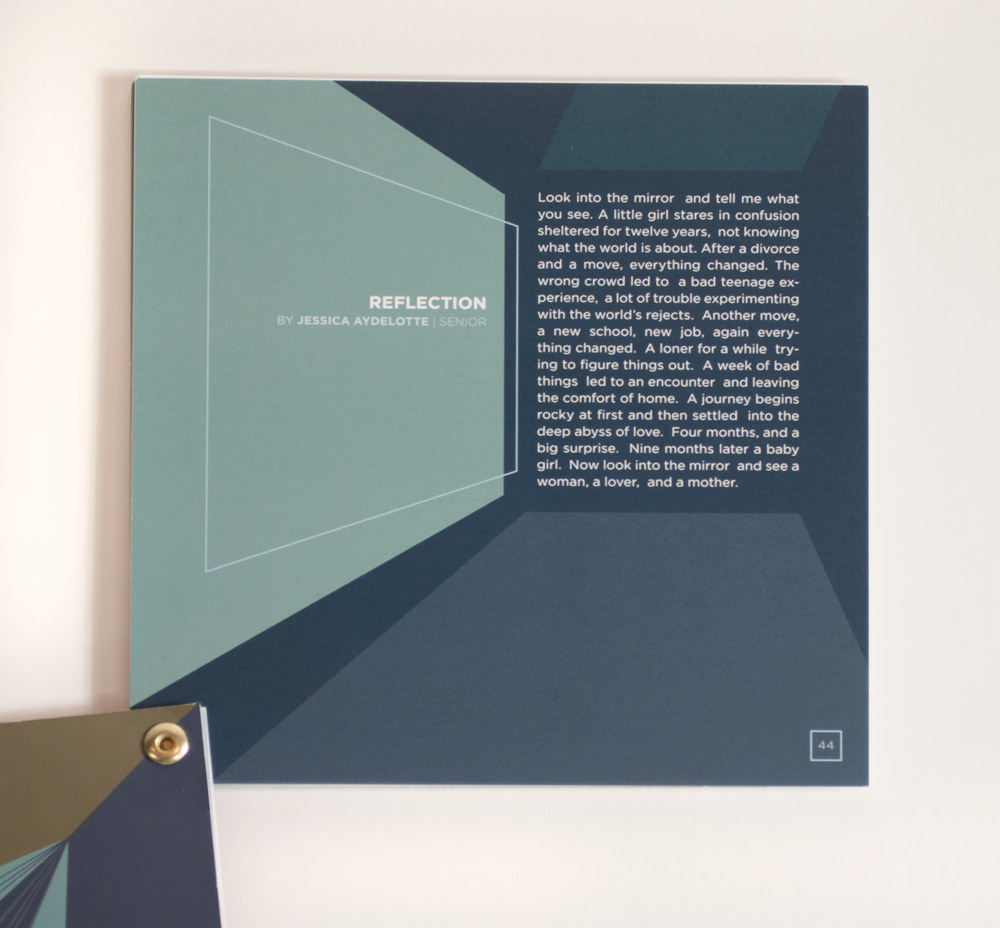

I’ve never been a believer in using common website tools like Squarespace, Behance, Wix, or WordPress for a portfolio. It’s fine in production, but if you know how to code, you should build your own website. Given most of my work involves other people’s content – as I have been employed as a Content Producer for the past 4 years – it also gives me an excuse to show off a bit and make the container surrounding my work the primary portfolio piece.
My old website was fine when I built it. It was built in 2017 after leaving a job I didn’t enjoy, and before my journey from Orlando, Florida to San Francisco I am now located in Seattle. At the time I liked my brand – I still kind of do – but it isn’t who I am now, and it reads slightly amateurish to me today.
I knew when I started designing this website, I would need a new brand. Guided by new design principles of logos being just your name, a trend which was not the case when I first started professional, I experimented with typefaces and quickly landed on Acumin Variable Concept. I was struck by the Text Strokes variation, which was designed to be overlaid on top of the type in its normal variation as a textural element. It was interesting, and techy, and the type begged me to remove it from its context, and use it in interesting ways. What if it was cropped off the page? What if it was separated from the text that made it readable? What if it was a textural element?
Historically I have been a very structured designer. I would spend 10, 20, 30 hours forging something that I believed was perfect. Carefully constrained, aligned with the grid, carefully crafted, but ultimately lacking a distinct personality. The taking of what Acumin Variable Concept was built to do and flipping it on its head – pulling it out of its designated place and using it in interesting ways – embodied my new design style of escaping from the grid. Escaping from my boring past. It wasn’t readable, but there's that famous quote from David Carson: “Don't mistake legibility for communication”. It was fun, and interesting. And playables are fun and interesting. And my work is fun and interesting.
After I settled on a typeface and a font style, the design of the site came together immediately, and the layout was solved almost instantaneously. With my history as a Print Designer and my current work as an interactive designer, I wanted to build a website that fused my past and present. I decided early on a horizontal layout, with unusual margins and page layouts, and a desktop-first instead of a mobile-first design. Conceptually, you’re here because you’re a professional interested in what I do. I imagine you’re on your computer, not your phone.
I design primarily in Illustrator, using Photoshop and Premiere as support. I have never enjoyed Figma, Sketch, or other similar programs. I have a specific memory of an intern laughing when I said I design websites in Illustrator – my first experience in being “seasoned” in the industry. Sorry, y’all, Figma sucks. The layouts flowed from me, and all pages, supporting files, everything came to fruition quickly. Blog pages, Portfolio Layouts, Homepages, etc. Designing for myself is easy for me. Coding is a bit more challenging.
This website was initially created with the skeleton framework, which was used to build my previous portfolios. This, however, was quickly abandoned. Skeleton is not made for horizontal layouts, given it has a 12-column layout structure. Horizontal websites have a more flexible column layout, extending into 20, 30, 40, 100 columns and beyond. When page size is not a factor, it doesn’t make sense to use a 12-column layout. It also makes it difficult to escape the grid, which is something I needed to do. Instead, I stole the normalize.css from Skeleton and migrated to a custom CSS framework.
When I decided on a javascript framework, I had decided early to use vanilla Javascript. As a playable designer, we use vanilla JS for file size and device/platform compatibility reasons. It felt conceptually correct to build my website in the same vanilla JS framework, and it was a great excuse to build on my limited javascript skills.
When coding, 2 primary challenges presented themselves: (1) horizontal scrolling is difficult and there exists very little documentation or frameworks to handle it, (2) horizontal layout does not work on mobile, meaning I’ll need to develop two different scrolling methods and accommodate both. I decided to pretend (2) doesn’t exist, and focus on (1). Strangely, I didn’t regret this decision.
When designing a horizontal scroll, you quickly realize how many different scrolling options the user has. The user can scroll:
With a mousewheel horizontally
With a mousewheel vertically
With a mousewheel by clicking and moving left/right/up/down
With arrow keys in all directions
With a trackpad and/or tablet
With a scrollbar
That is a lot of ways to scroll. To compound the issues, there’s two different components that control scroll position. window.scrollX, window.offsetLeft, and – in a way – window.innerHeight. These properties are functionally similar, but often can get out of sync, and are used for different purposes to control where the user is currently scrolled to.
I was made aware of a methodology where you rotate the entire container 90 degrees, and then rotate each element inside the container -90 degrees. Theoretically, this allows you to have the horizontal scrolling function like vertical scrolling. I have pretended this does not exist, because it sounds like a much easier and simpler solution than mine. Maybe in another 6 years when I rebuild this site, I’ll use that method.
Coding this was not easy, and I won’t be diving into the specific code here. What I will say is that I had one universal handler that handled the scrolling, and then we had about four different input methods which were loosely divided into linear and non-linear movement methods. Linear being the arrow keys, and nonlinear being the mouse wheel, the scroll bar, trackpads, etc.
After solving the scroll problem, the next scroll issue was parallax scrolling. Parallax scrolling codebases are bloated, complicated, and generally only work with vertical scrolling instead of horizontal scrolling. In addition, I found many of them to be inefficient. Rather than moving elements and having some elements static, it was a complicated mess of every container having a different parallax scroll value. Not only was this inefficient and harmful on performance, I don’t like content not scrolling 1:1 with what you are used to. It makes websites harder to read, and I only wanted parallax scrolling to apply to background animations and in subtle ways.
My solution was not ideal in some ways, but good in others. The parallax scrolling code I developed only triggers when the object is on the screen. At the start of the page-load, all objects have their positions loaded. Only when the object is about to be in-view does the parallax code activate. This allows me to have a large amount of parallax objects on the page without dramatically impacting performance. -->
In addition, many parallax scroll codes are difficult to accurately position objects. Because each page has multiple parallax elements placed in unique positions, I made sure their origin is the center-point of the viewport, rather than some obligatory position determined by the content, that I found with most parallax frameworks. In combination, both of these best practices, alongside some smart CSS, HTML, and SVG object organization, allow me to place parallax objects with relative ease and without much guess work.
The downside to the parallax code is one out of necessity to get the site up quickly – the code currently functions when the user scrolls, not where the content is in the viewport. This means that, if the user scrolls very quickly, or scrolls back and forth, the objects can get removed from their native position. This is OK, given parallax scrolling is only used for decorative elements, but unideal. In the future, I plan to have the objects parallax scroll based on the current window.scrollX, which will prevent this from happening and give me even more granular control over the object position.
The last piece of scrolling that we should talk about is the Portfolio Homepage. The index was a huge pain in the ass. Because of the way I structured it, traditional CSS Snap Scrolling was not going to function. My scroll code interprets vertical scrolling into horizontal scrolling, and the native CSS Snap Scroll would not function.
Therefore, I opted for a javascript solution. I detected if the page involved snap scrolling, and if so, any time a scroll event would normally happen, a snap-scroll would happen instead. For linear inputs methods, like the arrow keys, this was simple. I could detect where the panels start, and when the linear input method was activated, you would scroll to the next panel. For less linear input methods like mouse scroll, trackpads, and scrolling with the scrollbar, this was much more complicated.
I ended up going with a solution where the user is allowed to scroll as they see fit, and after x seconds, if they’re misaligned from an anchor point, the window would smooth scroll to that anchor point. I added some additional logic that detected if it should scroll forwards or backwards depending on the user’s start and end point, and also the velocity in which they scrolled.
This works great in most cases, however Chrome has an issue where if the user scrolls with the mousewheel, the animation actually stops after a specific amount of time. This issue does not exist in Safari, Firefox, Microsoft Edge, or other browsers. This meant an additional (janky) check, where after the scroll action is completed, if it was not at a snap point, it would run the scroll one final time. It doesn’t look the prettiest, but it does function.
In the future, adding a chrome-specific scroll velocity rather than the default would solve this, but it is not MVP.
The final piece of code I needed to write was this blog page. I needed this content to read more like a magazine layout and be horizontal like the rest of the webpage. Websites are not built horizontally for a reason. There is not currently a CSS declaration that I know of that allows content to overflow from one div to another. In order to have this content layout, I would need some sort of javascript interpretation to move content from one column to another.
The way that this functions is that all content is placed into one container on page load. The code first sets the height of the container and logs the height of the container and the content. If the paragraph has a larger height than the container it will remove the last word from that paragraph and put it into a temporary storage. That temporary storage will then place the code inside the next column and it runs the same check again, repeating until all columns are filled.
This worked well, is that if the content in the last column is too tall, it would overflow. Because columns are responsive and the content is not going to look the same on every browser, it’s not practical to assume how many columns there should be. I should know, I’m very sensitive to this and have a very large font size on my phone. I know when this is incorrect – trust me. Because of this, it was a necessity to have additional columns generated if the content was too long.
Unfortunately, this code is not great, but it does work. It is a reminder that I am not a programmer by trade. It runs too many times and is very inefficient. I had to add an onload animation to the first paragraph line by line to hide the fact that I'm moving an entire 10 to 15 page essay into a blog inefficiently. I’m not super proud of it, I know I can shorten it, but it works. A post-launch improvement for sure.
Building this website was a challenge. I’d never done javascript at this scale, I’ve never solved these challenges. But it was a learning experience and that's ultimately what I'm here for. I had the time, and I was taking advantage of it. I had the opportunity to learn and I took it.
There's still a lot of things I want to change. This site is launched in an MVP state. It is currently January 1st (happy New Year y'all) and there is a need for me to develop new features and iterate on existing ones. Accessibility is important to me, and me getting this website up without accessibility controls is embarrassing. I want to add sound effects and music. I have always played piano and adding ambiance and volume controls would be really nice. I want to add an actual home page and a blog homepage. My about page was thrown together in an afternoon. I’d love to do a self portrait and make an actual design. The javascript is not good! A proper web developer would laugh at it.
But it’s done, and it was a tremendous amount of work and a wonderful experience. Better done than perfect, and the joy of working on my own site is that it’s mine. I can fix it as I grow. I can invest time in it over the coming weeks, months, or years. I can study javascript more, or develop more work, and just have a good time being a creator. Something that, in a professional world, can be lacking sometimes. Some people paint. Some people draw. Some people code. I do whatever the hell this is – a combination of code, tech, design, and having good taste.
Building This Website – Brand & Typography (part 1)
